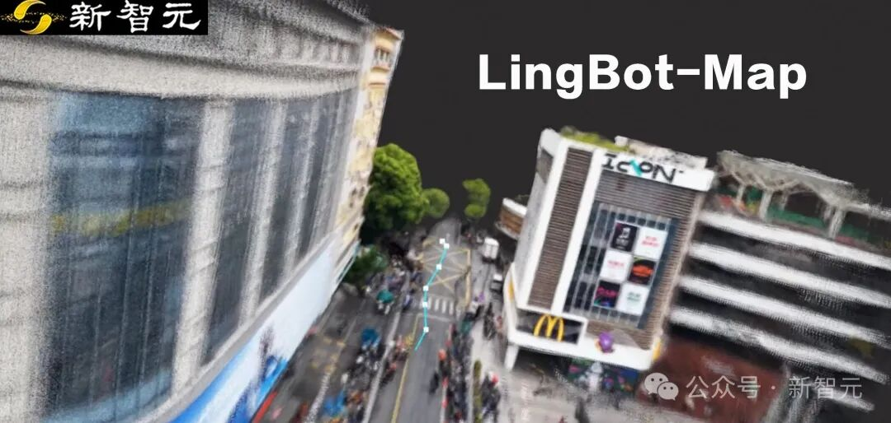
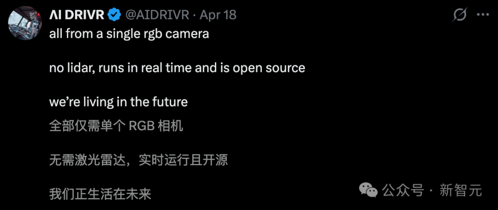
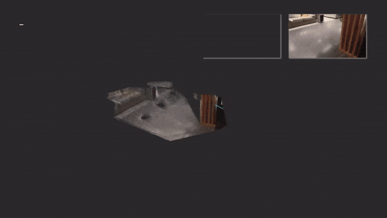
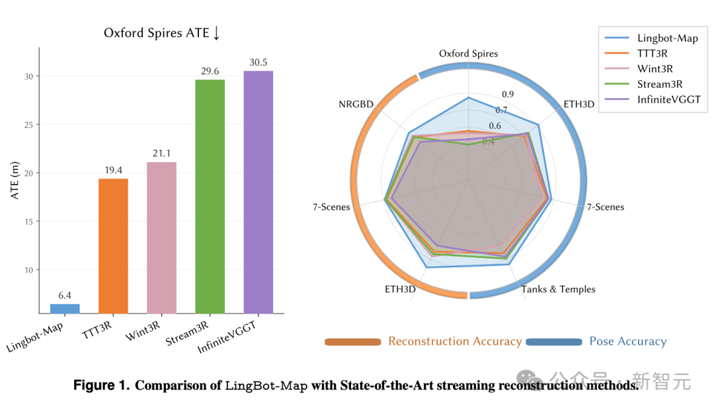

📑来源信息
原始链接
微信公众号文章 ↗
公众号
新智元
发布于
2026年4月21日 11:00
归档状态
✓ 全文14页已保存
抓取方式
Playwright (mobile UA, no-proxy)
文章ID
ARC-20260423-003
📝内容摘要
LingBot-Map是蚂蚁灵波开源的流式3D重建基础模型，仅靠一颗普通RGB摄像头（几十元），无需激光雷达，无需深度传感器，实现20FPS实时3D建图。连续跑一万帧，精度几乎不掉。
核心技术：几何上下文注意力（GCA），维护三层记忆（锚点、位姿参考窗口、轨迹记忆），将内存增长速率压缩80倍。ATE轨迹误差在ETH3D数据集上达到0.20米，超越激光雷达方案。
结合LingBot-Depth（透明物体深度估计），形成完整的空间感知闭环：Depth负责看清每个像素有多远，Map负责实时理解整个三维场景。
技术栈完整开源（Apache 2.0），代码+权重+报告同步上线Hugging Face和ModelScope。
📄原文图片存档（14页）
共14页 · 点击放大查看
1封面图

2城市街区3D重建

3航拍俯瞰动画

4室内穿梭实测

5暗光走廊测试

6虚拟→3D空间

7轨迹对比动画

8长轨迹测试

9ETH3D数据集

10架构图

11三层记忆机制

12技术链路

14尾页